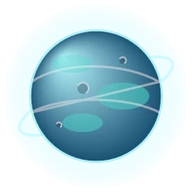
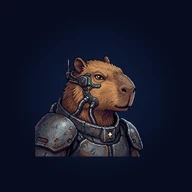

Na Mesma Pilha
Palavras · Paciência
Junte as palavras da mesma categoria e limpe a mesa.
Em breve no iPhone
Já dá para jogar
Palavras · Paciência
Junte as palavras da mesma categoria e limpe a mesa.
Em breve no iPhone

Quebra-cabeça · Blocos
Encaixe as peças, limpe linhas e colunas e ganhe estrelas.
Em breve no iPhone

Física · Para toda a família
Aperte os jatos e leve cada argola até a haste, como no brinquedo de água.
Em breve no iPhone

Reflexo · Para todas as idades
Um toque muda a órbita do planeta e desvia dos meteoros.
Em breve no iPhone

Arcade · Quebra-blocos
A nave do Capi rebate a bola contra blocos, minérios e chefes da fauna brasileira.
Em breve no iPhone
História · Geografia
Acerte quando e onde cada fato da história aconteceu.